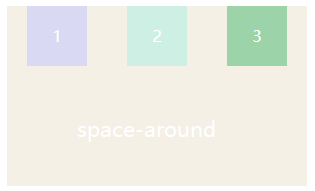

一篇文章弄懂flex布局
谈到flex布局，我不知道有多少人跟我一样，在本能的想到justify-content:center与align-items:center两条属性之后，除此之外的其它属性居然显得格外陌生。
贰 ❀ 关于flex布局
我们知道当并列书写多个div标签，它们会纵向向下排位，如果我们想将多个div并列成一排，就得借助position，float，或display属性，这便是传统的盒模型做法。
而flex布局则是一种新的布局方案，通过为修改父div的display属性，让父元素成为一个flex容器，从而可以自由的操作容器中子元素(项目)的排列方式。
例如我们让多个div横向排列，传统做法是使用浮动，但浮空后因为脱离文档流的缘故，父元素会失去高度，这又涉及了清除浮动等一系列的问题。
而flex布局相对简单很多，修改父元素display:flex，你会发现div自动就排列成了一行，而且没有浮动之后的副作用，从回流角度考虑，flex的性能更优于float；随着浏览器不断兼容以及旧版本的淘汰，flex布局注定会成为更为流行的布局方案。
flex布局属性主要由容器属性和项目属性构成，下面我会分开讨论这两类属性。
贰 ❀ 容器属性
1.flex-direction属性
取值：row(默认) | row-reverse | column | column-reverse
用于控制项目排列方向与顺序，默认row，即横向排列，项目排列顺序为正序1-2-3；row-reverse同为横向排列，但项目顺序为倒序3-2-1。
column 与row相反，为纵向排列，项目顺序为正序1-2-3，column-reverse同为纵向排列，项目顺序为倒序3-2-1。
2.flex-wrap属性
取值：nowrap(默认) | wrap | wrap-reverse
用于控制项目是否换行，nowrap表示不换行；
举个例子：比如容器宽度为300px，容器中有6个宽度为60px的项目，nowrap情况下，项目会强行等分容器宽度从而不换行，那么项目实际宽度也就只有50px了，而非我们自己设置的60px。
wrap表示换行，即项目不会等分容器宽度，而是根据自身宽度进行排列，如果超出父容器宽度则自然换行。
wrap-reverse同样表示换行，需要注意的是第一排会紧贴容器底部，而不是我们想象的项目6紧贴容器顶部，效果与wrap相反。
3.flex-flow属性
flex-flow属性是flex-deriction与flex-wrap属性的简写集合，默认属性为row nowrap，即横向排列，且不换行，如果需要控制项目排列与换行，推荐使用此属性，而非单独写两个。
4.justify-content属性
取值：flex-start(默认) | flex-end | center | space-between | space-around | space-evenly;
用于控制项目在横轴的对齐方式，默认flex-start即左对齐，center 为居中，对应的flex-end为右对齐。
space-between为左右两端对齐，即左右两侧项目都紧贴容器，且项目之间间距相等。
space-around为项目之间间距为左右两侧项目到容器间距的2倍，比较特别的布局，日常使用不太多。

space-evenly为项目之间间距与项目与容器间距相等，相当于除去项目宽度，平均分配了剩余宽度作为项目左右margin。
5.align-items属性
取值：flex-start | flex-end | center | baseline | stretch(默认)
用于控制项目在纵轴排列方式，默认stretch即如果项目没设置高度，或高度为auto，则占满整个容器，下面第一张图的项目没设置高度，其余图片中均为60px。
flex-start会让项目在纵轴紧贴容器顶部，flex-end与之相反：
center使用最多，自然不会陌生，在纵轴中心位置排列：
baseline比较特殊，它让项目以第一行文字的基线为参照进行排列：
注意，常理来说justify-content与align-items默认分别处理项目横轴，纵轴的对齐方式，但如果我们修改了flex-direction为column，它们处理的轴向会交换，也就是justify-content处理纵轴，align-items处理横轴。
6.align-content
取值：flex-start | flex-end | center | space-between | space-around | space-evenly | stretch(默认);
用于控制多行项目的对齐方式，如果项目只有一行则不会起作用；默认stretch，即在项目没设置高度，或高度为auto情况下让项目填满整个容器，与align-items类似。注意，如下演示的12个项目我均没有设置高度。
flex-start ，center，flex-end 与align-items属性表现一致：
space-around与justify-content保持一致，即项目之间间距为上下两端项目与容器间距两倍。
space-evenly同理，项目之间间距与项目到容器之间间距相等，space-between为上下两侧项目紧贴容器。
align-content其实也有baseline等其它可用值，表现与上面介绍过的属性一致，只是单行项目或多行项目的区别。
叁 ❀ 项目属性
介绍完容器属性，简单介绍下项目属性。容器属性是加在容器上的，那么项目属性呢，就是写在项目上的，就好比容器属性给ul，项目属性给li差不多一个意思。
1.order
取值：默认0，用于决定项目排列顺序，数值越小，项目排列越靠前。
2.flex-grow
取值：默认0，用于决定项目在有剩余空间的情况下是否放大，默认不放大；注意，即便设置了固定宽度，也会放大。
假设默认三个项目中前两个个项目都是0，最后一个是1，最后的项目会沾满剩余所有空间。
假设只有第一个项目默认为0，后面两个项目flex-grow均为1，那么后两个项目平分剩余空间。
假设第一个项目默认为0，第二个项目为flex-grow:2，最后一个项目为1，则第二个项目在放大时所占空间是最后项目的两倍。
3.flex-shrink
取值：默认1，用于决定项目在空间不足时是否缩小，默认项目都是1，即空间不足时大家一起等比缩小；注意，即便设置了固定宽度，也会缩小。
但如果某个项目flex-shrink设置为0，则即便空间不够，自身也不缩小。

上图中第二个项目flex-shrink为0，所以自身不会缩小。
4.flex-basis
取值：默认auto，用于设置项目宽度，默认auto时，项目会保持默认宽度，或者以width为自身的宽度，但如果设置了flex-basis，权重会width属性高，因此会覆盖widtn属性。
上图中先设置了flex-basis属性，后设置了width属性，但宽度依旧以flex-basis属性为准。
5.flex
取值：默认0 1 auto，flex属性是flex-grow，flex-shrink与flex-basis三个属性的简写，用于定义项目放大，缩小与宽度。
该属性有两个快捷键值，分别是auto(1 1 auto)等分放大缩小，与none(0 0 auto)不放大不缩小。
6.align-self
取值：auto(默认) | flex-start | flex-end | center | baseline | stretch，表示继承父容器的align-items属性。如果没父元素，则默认stretch。
用于让个别项目拥有与其它项目不同的对齐方式，各值的表现与父容器的align-items属性完全一致。
到这里，flex布局属性也就介绍完毕了，老实说，跟着完整写了一遍，发现之前很多理解都错误了，最骚的是部分属性单词我都拼错了，这篇博客就当flex笔记整理，若有缘人能看见，也希望能帮助到你。